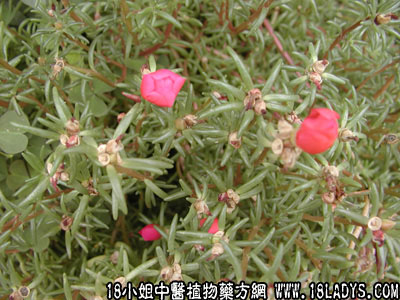

(本文解释权归中药材天地网兄弟站-18小姐中医植物药方网所有,如需转载请注明出处)
半枝莲(中药材植物名:半枝莲)(植物科目:唇形科)

别名：狭叶韩信草《广州植物志》、牙刷草、田基草《江苏植物药材志》、并头草（南京）、通经草、紫连草（南京民间草药）、向天盏、耳挖草、小向天匙（福建）、半板莲（陕西汉中、城固县）。
入药部分：全草（干燥）。
采集期：夏，秋。
功能：能治妇女病，以代益母草，有很好的疗效。近年来民间用以治各种癌病，详见白花蛇舌草说明（未有临床经验），用量5钱至1两。
分布：广东各县、福建、安徽、江苏、陕西汉中、城固县。
福建省《同安药材》第一集65页记载：此药近年来有用以治各种癌症，用全株鲜草12两或干草4两，配以白鲜矛根4两或干2两，红糖2两，用八碗水煎成一碗，一天服一次，入服后有反应呕吐现象可暂停三天再服。（按南洋等地华侨亦有采取此方治癌，多用鲜草。）
近年来亦有采用半枝莲一两、白花蛇舌草2两，用5磅水、慢火煎成一磅作茶喝，一天喝多次，长期喝，用以治癌症。
亦有采取上列福建《同安药材》处方、加铁树叶一两，八月扎一两，以治癌症。
按癌症有多种，症状非常复杂，世界医学上认为极其棘手的恶症，至今还是未有把握防治、或根治，关于用白花蛇舌草、半枝莲等药用以治癌，只是民间采用，疗效并不显著，大约鼻咽癌、肠癌，初期症可以抑制作用；如属后期症则难以见效。
(本文解释权归中药材天地网兄弟站-18小姐中医植物药方网所有,如需转载请注明出处)